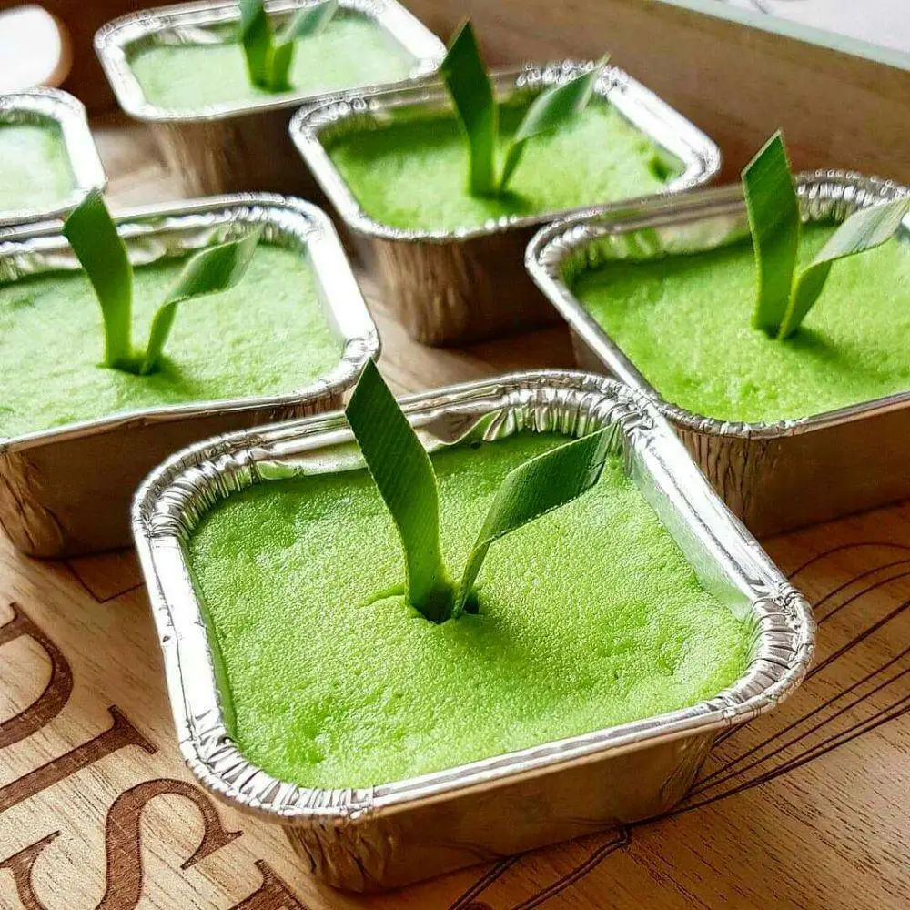
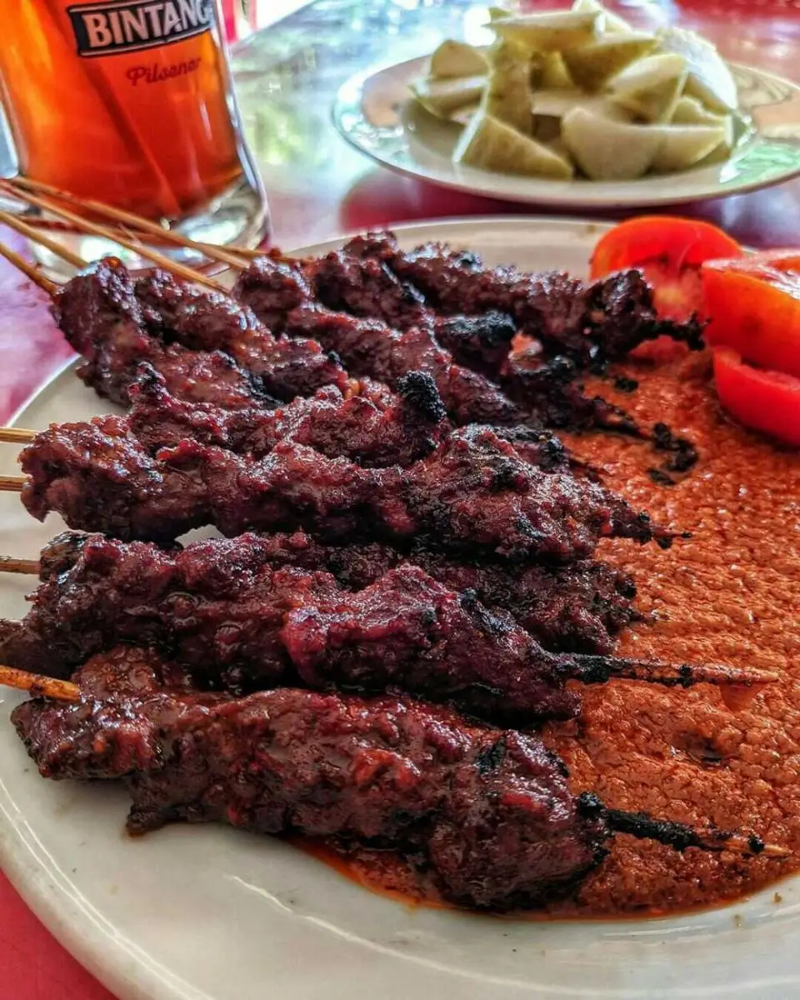
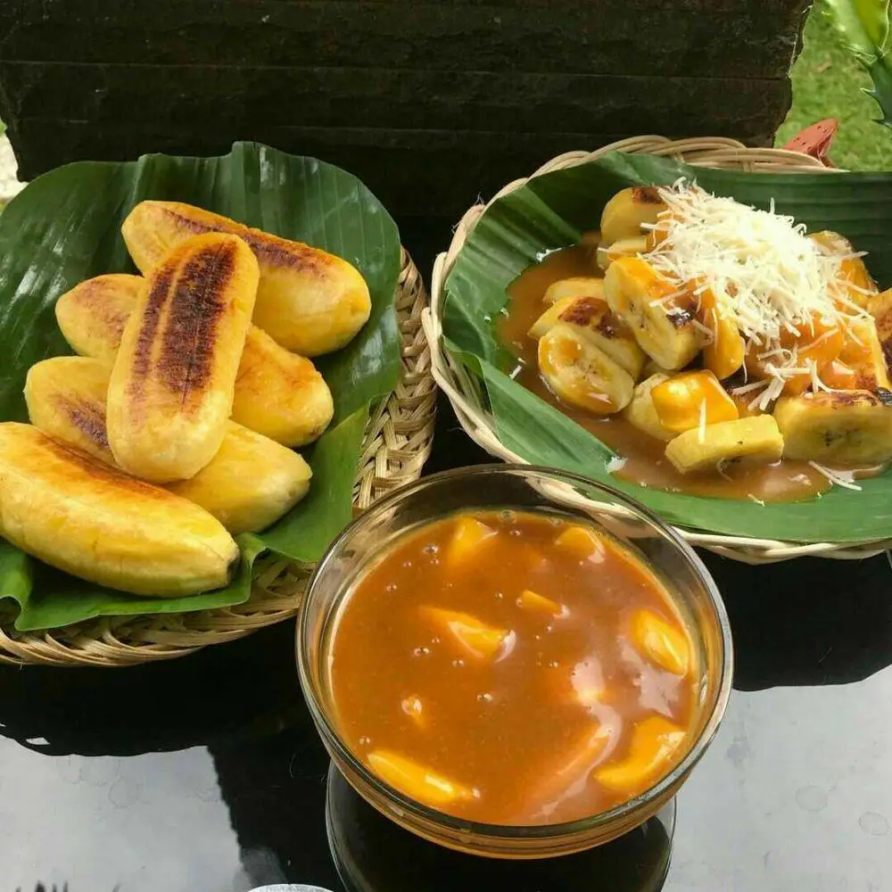
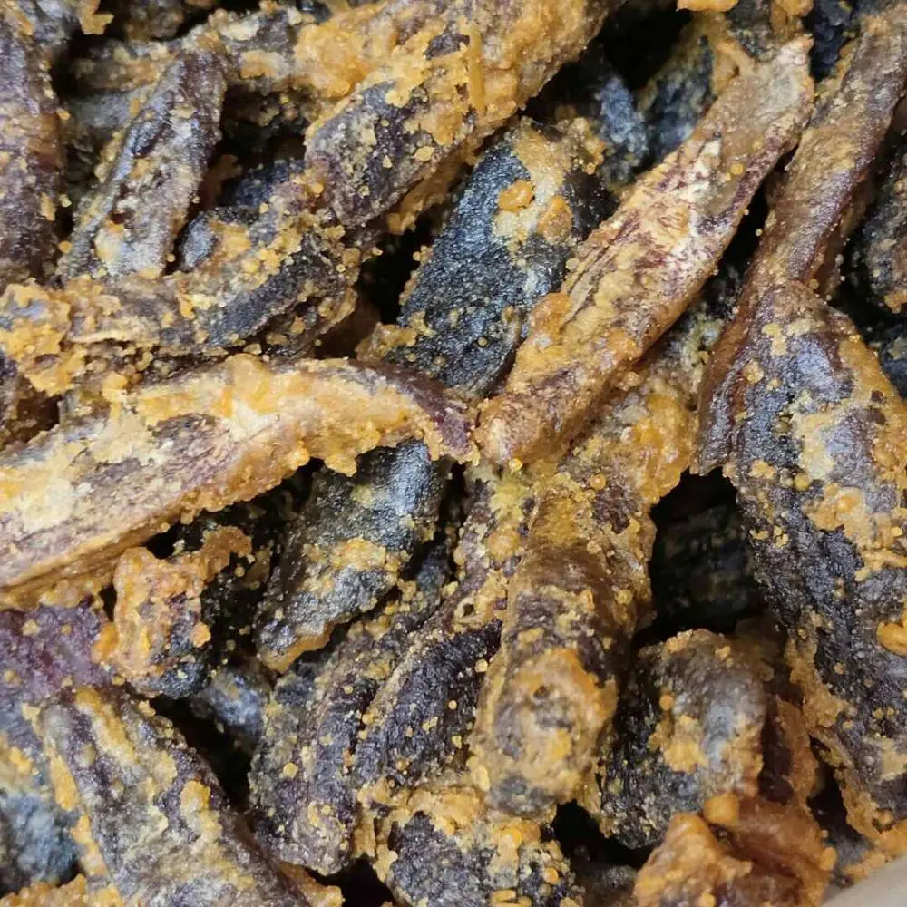
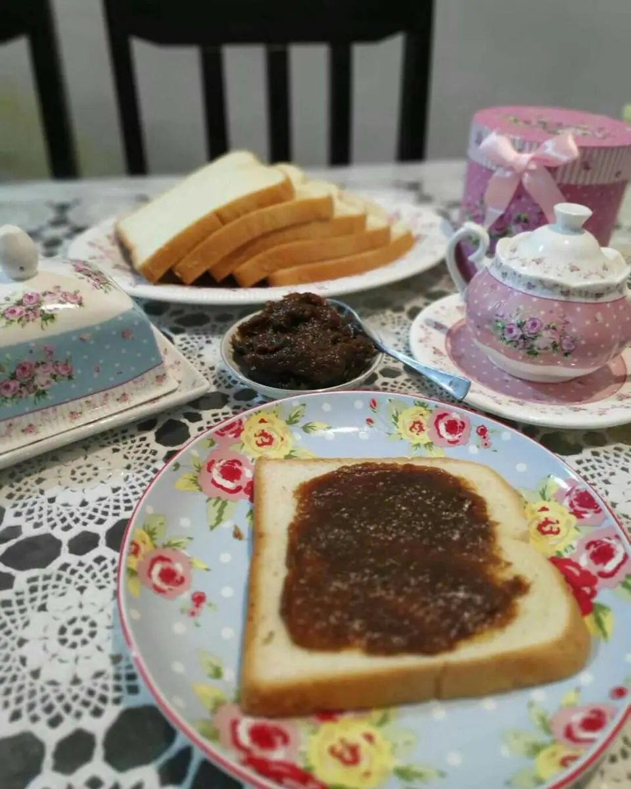

Local
Food

Kue Jenderal Mabuk
This bright green cake is made from a mixture of milk, sugar, and eggs. With its very sweet taste, this cake is often sought after and bought in bulk by tourists looking for souvenirs in Tanah Grogot, Paser.

Sate Payau
In terms of appearance, sate payau doesn't look much different from regular satay sold elsewhere. Sate payau consists of skewered meat drizzled with peanut sauce. What sets it apart is that sate payau is made from venison (deer meat).

Pisang Gapit
Pisang gapit is a pressed banana dish. It is typically made using kepok bananas grilled over hot coals, and after they are half-cooked, the bananas are pressed using a wooden clamping tool.

Pisang Rimpi
Pisang rimpi is a delicious snack made from kepok bananas. This snack is processed by smoking kepok bananas over wood charcoal until they turn brownish and release a savory, delicious aroma.

Dempo Duyan
Dempo duyan is a traditional Paser food made from real durian flesh. This food is prepared by taking the durian flesh, which has been separated from the seeds, and placing it into a pan over hot coals.